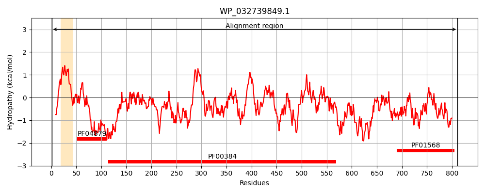
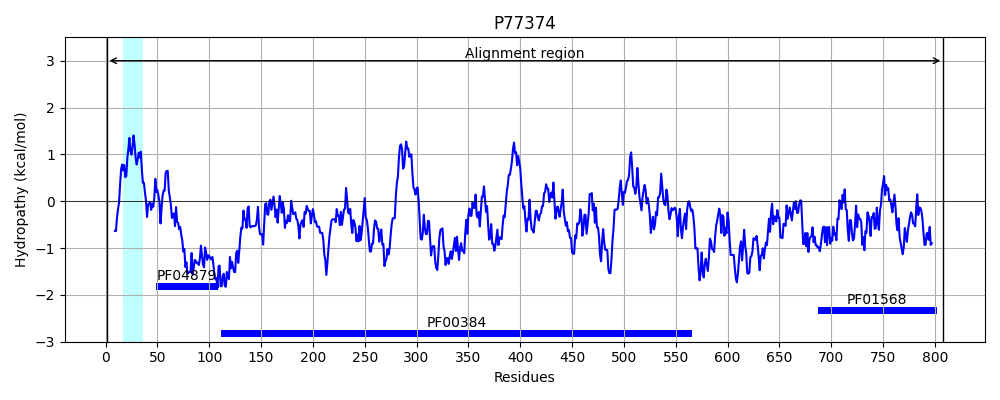
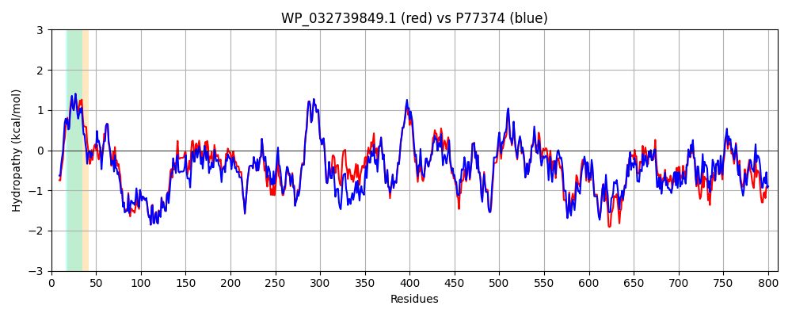

Hit Accession: P77374
Hit TCID: 5.A.3.3.1
Hit Description: gnl|BL_ORD_ID|11508 gnl|TC-DB|P77374|5.A.3.3.1 Putative dimethyl sulfoxide reductase chain ynfE precursor (EC 1.8.99.-) (DMSO reductase) - Escherichia coli.
Mach Len: 811
e:0.000000
Query TMS Count : 1
Hit TMS Count: 1
TMS-Overlap Score: 0.900000
Predicted Substrates:CHEBI:10545;electron
BLAST Alignment:
Score: 3755 , Bit scores: 1451 bits, E-value: 0.0e+00, Alignment length: 811, Percentage identity: 86
Query: 1 MSNQESPGGVSRRALLKSTALSSLALAAGGLTLPFTLRSAAAAVQQATGDNTRIVWGACSVNCGSRCALRLHVRDDEVVYVETDNTGDDRYGDHQVRACLRGRSIRRRINHPDRLNYPMKRIGKRGEGKFERISWQEALDILADRLKSTVAQYGNEAVYINYSSGIVGGNITRSSPSASPVARLMNCYGGSLNQYGTYSTAQIACAMPYTYGSNDGNSTSDIENSKLVVMFGNNPAETRMSGGGITWYLEQARERSNARMIVIDPRYTDTAAGREDEWIPIRPGTDAALVAGIAWVLINEDLVDQPFLDKYCVGYDEKTLPVGAPANGHYKAYILGEGDDGVAKTPQWASRITGIPADRIIKLAREIGMSKPAYICQGWGPQRQANGELSARAIAMLPILTGNVGINGGNSGARESTYTITIERLPVLENPVKTAISCFTWTDAIARGPEMTATRDGVRGKEKLDVPIKFLWNYAGNTIINQHSDINKTHEILQDESKCETIVVIDNFMTSSAKYADLLLPDLMTVEQEDIIPNDYAGNMGYLIFIQPATSAKFERKPIYWILSEVAKRLGDDVHQRFTEGRTQAQWLQHLYAKMMAKDPALPGYDDLKQMGIYKRKDPNGHFVAYRDFRRDPEAHPLKTPSGKIEIYSSRLAEIAAHWQLEKDEVISPLPVYASTFEGWDDPLRSQYPLQLFGFHYKARTHSSYGNVDVLQAACRQEVWLNPLDAEKRGIKNGDMVRVFNQRGEVRLPAKVTPRIMPGVSAMGQGAWHDANMAGDRIDHGACMNTLTTHRPSPLAKGNPQHTNLVDIEKV 811
MS E G+SRR L+KSTA+ SLALAAGG +LPFTLR+AAAAVQQA ++VWGACSVNCGSRCALRLHV+D+EV +VETDNTG D YG+HQVRACLRGRSIRRRINHPDRLNYPMKR+GKRGEGKFERISW EALD +A LK TV QYGNEAVYI YSSGIVGGN+TRSSPSAS V RLMNCYGGSLNQYG+YSTAQI+CAMPYTYGSNDGNST+DIENSKLVVMFGNNPAETRMSGGGIT+ LE+ARE+SNA+MIVIDPRYTDTAAGREDEW+PIRPGTDAALVAGIAWVLINE+LVDQPFLDKYCVGYDEKTLP AP NGHYKAYILGEGDD AKTPQWAS+ITGIP DRIIKLAREIG +KPAYICQGWGPQRQANGEL+ARAIAMLPILTGNVGI+GGNSGARESTYTITIERLPVL+NPVKT+ISCF+WTDAI GP+MTA RDGVRGK+KLDVPIKF+WNYAGNT++NQHSDINKTHEILQDESKCE IVVI+NFMTSSAKYAD+LLPDLMTVEQEDIIPNDYAGNMGYLIF+QP TS KFERKPIYWILSEVAKRLG DV+Q+FTEGRTQ QWLQHLYAKM+AKDPALP YD+LK+MGIYKRKDPNGHFVAY+ FR DPEA+PLKTPSGKIEIYSSRLAEIA W+LEKDEVISPLPVYASTFEGW+ P R +PLQLFGFHYK+RTHS+YGN+D+L+AACRQEVW+NP+DA+KRGI NGDMVRVFN RGEVRLPAKVTPRI+PGVSAMGQGAWH+ANM+GD+IDHG C+NTLTT RPSPLAKGNPQHTNLV+IEK+
Sbjct: 1 MSKNERMVGISRRTLVKSTAIGSLALAAGGFSLPFTLRNAAAAVQQA---REKVVWGACSVNCGSRCALRLHVKDNEVTWVETDNTGSDEYGNHQVRACLRGRSIRRRINHPDRLNYPMKRVGKRGEGKFERISWDEALDTIASSLKKTVEQYGNEAVYIQYSSGIVGGNMTRSSPSASAVKRLMNCYGGSLNQYGSYSTAQISCAMPYTYGSNDGNSTTDIENSKLVVMFGNNPAETRMSGGGITYLLEKAREKSNAKMIVIDPRYTDTAAGREDEWLPIRPGTDAALVAGIAWVLINENLVDQPFLDKYCVGYDEKTLPADAPKNGHYKAYILGEGDDKTAKTPQWASQITGIPEDRIIKLAREIGTAKPAYICQGWGPQRQANGELTARAIAMLPILTGNVGISGGNSGARESTYTITIERLPVLDNPVKTSISCFSWTDAIDHGPQMTAIRDGVRGKDKLDVPIKFIWNYAGNTLVNQHSDINKTHEILQDESKCEMIVVIENFMTSSAKYADILLPDLMTVEQEDIIPNDYAGNMGYLIFLQPVTSEKFERKPIYWILSEVAKRLGPDVYQKFTEGRTQEQWLQHLYAKMLAKDPALPSYDELKKMGIYKRKDPNGHFVAYKAFRDDPEANPLKTPSGKIEIYSSRLAEIARTWELEKDEVISPLPVYASTFEGWNSPERRTFPLQLFGFHYKSRTHSTYGNIDLLKAACRQEVWINPIDAQKRGIANGDMVRVFNHRGEVRLPAKVTPRILPGVSAMGQGAWHEANMSGDKIDHGGCVNTLTTLRPSPLAKGNPQHTNLVEIEKI 808 | Protein Hydropathy Plots: |
|---|
|  |  |
Pairwise Alignment-Hydropathy Plot:
|
|---|
|  |